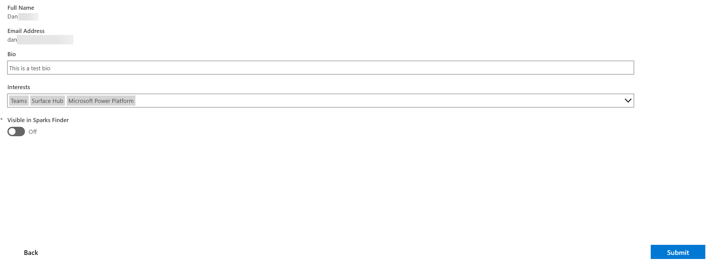
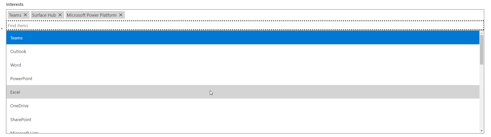
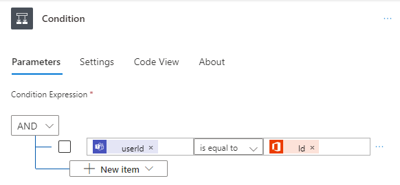
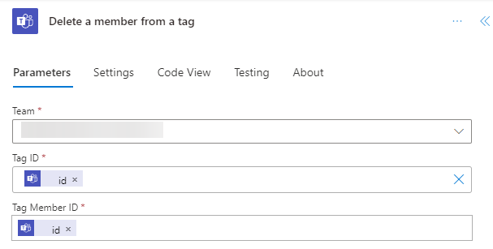
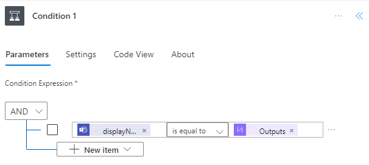
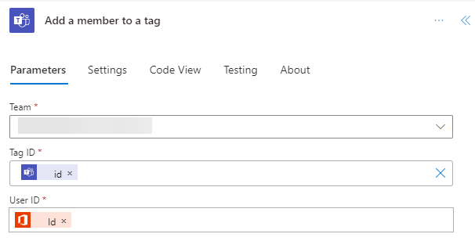
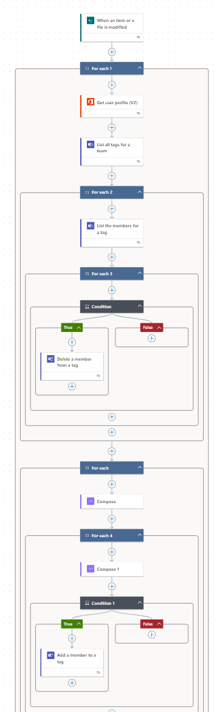

Introduction
Recently, I found myself in need of setting up a community team on Microsoft Teams. My goal was to enable members to select their areas of interest, like SharePoint or Excel, using a PowerApp. This way, they could ‘subscribe’ to specific topics. Then, whenever someone in the team wanted to discuss these topics, they could simply use tags like @SharePoint to notify the interested members. This approach seemed like an efficient way to keep our discussions organized and relevant to everyone’s interests.
Understanding the Workflow
Overview
The process involves:
- Creating a Power App: Users select their interests from pre-defined tags.
- Storing Data in SharePoint: The selections are saved to a SharePoint list.
- Using Power Automate: To dynamically update Teams tags based on changes in the SharePoint list.
- Managing Teams Tags: Ensuring continuity of tags.
The Power App
Designing the Interface
In my case I have an initial page displays all members, featuring a brief bio, their interests, and contact information, along with an “Edit Profile” button for updating personal info.  The Edit screen has been created with the PowerCat Creator kit and uses just a standard combobox for the tags picker that eferences a SharePoint list’s choice column, where all tags are pre-defined.

Integration with SharePoint
On submission, the app writes the user’s choices to a SharePoint list that will trigger the Power Automate flow as the flow is watching for changes in this list.
SharePoint List Structure
The list structure is pretty simple containing
- A person object of the O365 user the row relates to
- A free text bio column that the user can update
- A choice column that will contain all our tags
- A boolian field to control visibility in the public list (linked to a toggle switch in the app).
Power Automate Flow
Trigger
- The flow starts when a user’s entry in the SharePoint list is modified. This is tracked using the SharePoint trigger “When an item or file is modified”.
Actions
Removing All Tags From The User
- For Each User: The process begins with a loop through all users. For each user, the “Get user profile (V2)” action retrieves their Office 365 information.
- Retrieve All Tags: The next step involves fetching a list of all tags in the team using the “List all tags for a Team” action. This provides the display name and tag ID, (which we will need later).
- Tag Removal Process:
- For each tag, a nested loop is initiated to list all members associated with that tag using “List the members for a tag.”
- Within this loop, a condition checks if the current user (identified by their User ID) is a member of the tag.
 - If the condition is met (i.e., the user’s ID matches the ID from the ‘Get user profile’ step), the user is removed from the tag using the “Delete a member from a tag” action. 
This approach ensures that all tags associated with a user are accurately identified and removed before updating them with new interests.
Adding The New Tags
After exiting the first loop, once all the tags associated with a user are deleted, we initiate our second main loop. This loop iterates through all the interests specified in the choice column of the SharePoint list.
- Iterate Through Interests: The loop goes through each interest listed in the SharePoint list’s choice column.
- Match Tags with Interests:
- Within this loop, we cycle through all the tags in our team.
- The goal is to check if the display name of any tag matches the selected interests from the list.
- Assigning Tags to User:
- If a match is found, we use the “Add member to a tag” action.
 - This action requires the user’s ID (obtained from the “Get User Profile” step) and the tag ID (retrieved earlier from the “List all tags for a Team” step).

- If a match is found, we use the “Add member to a tag” action.
Maintenance
- Service Account for Tag Continuity:
- To ensure no tag is inadvertently deleted, a service account is added to the team. This is crucial because if a tag has zero members, it will be automatically removed by Teams.
- Synchronizing Tags with SharePoint:
- It’s important to add each tag created in Teams to the SharePoint choice column. This synchronization is necessary for two reasons: it allows for automatic matching in the Power Automate flow and enables users to select these tags in the Power App.
- Optionally, certain tags in Teams, like @moderators, can be reserved for admin assignment only. These tags don’t necessarily need to be listed in the SharePoint column if they are not intended for user selection.
- Managing Flow Expiration:
- Microsoft Power Automate has an expiration policy where flows that haven’t run for 60 or 90 days (depending on the licensing) are automatically turned off.
- To prevent this, you can periodically update a tag such as adding or removing one from your profile every 60 days. Alternatively, simply reactivate the flow when you receive an email notification about its deactivation.
Full Flow
